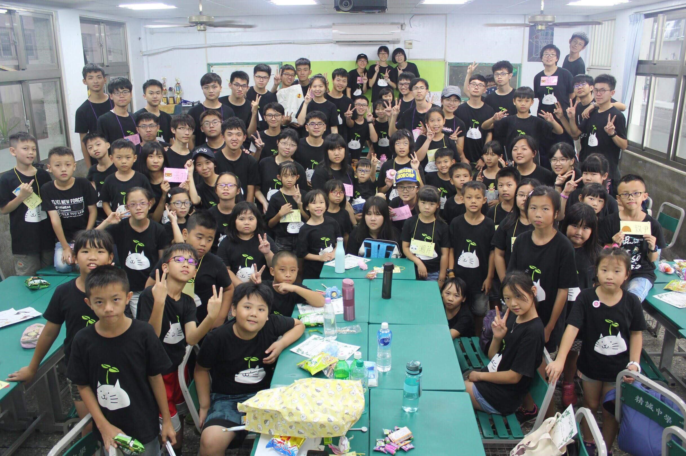
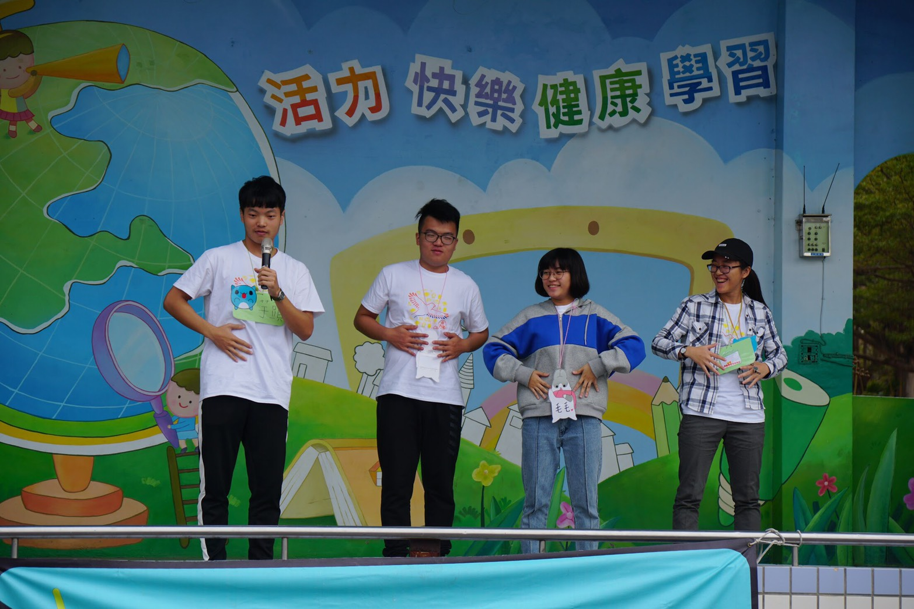
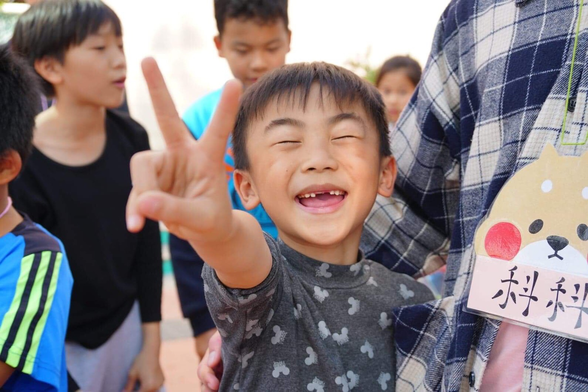

小豆苗營隊總召
高三下舉辦小豆苗營隊擔任總召，幫助家扶中心的小孩。由於當時多數同學需準備學測面試或是指考，相當忙碌，因此我的首要任務為凝聚大家的向心力，帶領整個營隊工人向前，共同完成任務。然而有遇到較為不負責任的小組員，將自己的尚未完成或是不合格的工作草草交代給他人就出國消失了。此時我們能做的即是趕緊在營前補救，追究責任已無任何意義。不過另一方面，我在管理部分也有些許問題，應該更加仔細的了解每位小組員的活動進度以及他們自身能否順利跟上每次的進度。後來透過妥善的分工，以及和善的處理方式，我們仍快樂的將所有事完成。對我而言，這個營隊的本質為快樂，因此不論過程如何，我希望大家都能感受到快樂的氣氛。
從小豆苗營隊的總召中，我了解完成一件事是無法依靠自己的力量的，因此如何成為一個良好的領導者則成了這個職位最重要的任務。可能我不擅長每一項工作，但我要學習的是讓大家各得其所。就我本身，最重要的即是熱忱，用熱情感染所有人，才能帶動大家的力量。而後，透過異位思考，領導者須了解底下每個個體的需求。如此，既能獲得信賴，也能幫助大家完成任務。當時，我將所有工人分好組別後，再深入了解每個人的情況，除了幫助他們更快融入營隊之外，我也希望領導者的以身作則可以有效號召大家。未來當我在一個團隊中，我能清楚的了解領導者的本分，以及身為工人該主動完成的事，不管身處哪個職位，都希望我能成為一位有溫度的一個人。如同我在大學期間的返鄉服務中擔任隊輔，我能知道領導者需要我幫助什麼任務，因此我會主動詢問或是幫忙。在管理小朋友期間也秉持著耐心，期許能將我的溫度感染給小朋友們。

彰友會返鄉服務隊輔
大一寒假期間擔任彰友會返鄉服務的隊輔。擔任第一線管理小朋友的我，需要主動關心小朋友，了解小朋友的需求，並且幫助他們。同時，對於不受控的小孩子，我會以勸導的方式取代責備。當時小隊中有一年級的小孩，時常在課堂中吵鬧，戶外活動時也時常脫離隊伍。我能做的就是耐心陪伴，課堂中坐在他身旁安頓他的情緒，在戶外則不斷誘導他進入遊戲內，而非以強迫的方式，期許能達到較為良好的教育效果。

在整個返服過程中，我獲得到最大的快樂是看到小朋友臉上開心的笑容，每當他們在體驗活動時，臉上浮出得笑容就是對我們背後的籌備給予最大的讚賞，當然被讚賞了一番後，心情總是會變得非常愉快。而我最大的挫折就是聽到小朋友們說出好無聊這句話，尤其是在帶領團康遊戲的時候，因為小朋友覺得很無趣時，就會將他們最真的想法直接呈現出來，不參與遊戲，對團體融合是個很大的障礙，而這會讓我感到很挫折。

返服結束後我對返服有更深一層的認識，原先以為返服就只是去陪小孩子玩耍而已，沒想到還要自己準備教材來教導他們，也沒有想到參加返服完可跟夥伴們建立起革命情感。 現在的我認為返服是一個讓偏鄉地區的小孩體驗到在生活區域所體驗不到的歡樂活動，也是讓我們這些大學生重回童年的一個時光隧道，在小朋友的面前彷彿看到了當年的自己，吵吵鬧鬧，斤斤計較，卻又開心的膩在一起。 從一開始填了返服的報名表時，內心並沒有起太多的盪漾，直到零籌相見歡之時才真正的意識到有一項重大的任務交付在我的身上了，從一開始學習晚會的光舞，約練了第一次，到最後在晚會上表演給台下的觀眾看，覺得非常感動與值得。
管理之鑰小活動
升大二的暑假我參加了系上的營隊管理之鑰，我擔任的是小活動，負責設計整個RPG的遊戲。這是我大一下學期最喜歡的活動了，我的夥伴們都很罩，幾乎梅花上什麼時間就完成了會讓人感到amazing的故事線。在這之前我玩過6次RPG，但我自認為我們三個一起做得比我以前玩過的都好玩上許多，但我自認為我們三個一起做得比我以前玩過的都好玩上許多。每次試跑時隊輔都會跟我們說我們的故事很棒很好玩。不過過程中外力很多，上營前一天因應指考撞到營期RPG活動的時間，逼不得已之下而臨時改了8個腳色的位置。然而，屋漏偏逢連夜雨，在上營正是遊戲期間下了無比巨大的暴雨，雨下得越大，我的心越來越涼。看著美味小隊員寸步難行的樣子，最後大家都只破了大概1/4的劇情，很多驚喜處都尚未被開啟。但直到現在，再回去回顧之下，好像也比較開朗了些，就像是長大之後會學到，不是付出了很多很多的努力，就可以得到相對的回報，畢竟這是人生。

小豆苗藝文服務隊
我們是一群彰化的熱血高中生，希望用我們真誠的心帶給彰化的孩子們不同以往的藝文饗宴，讓想法天馬行空的孩子們更添創造力，並樂觀看待生活！